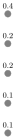
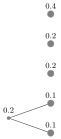
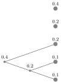
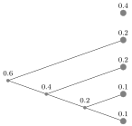
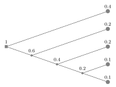
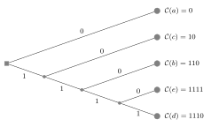
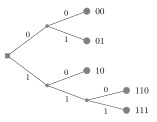
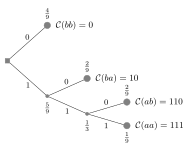

Tema 4. Codis de Huffman pdf
Introducció
A la lliçó anterior, vam veure que els codis binaris sense prefix permeten representar una font sense errors. Però, quin és el codi òptim en termes d'eficiència, és a dir, el que minimitza la longitud mitjana?
Considerem una font $U$ que pren valors a $\{1,\ldots,r\}$ amb distribució de probabilitat $\{p_1,\ldots,p_r\}$. Per trobar el codi font sense prefix binari que minimitzi la longitud mitjana $$ \Lav = \sum_{j=1}^r \pii\li, \tag{4.1}$$ si les probabilitats s'ordenen com $$ p_1\geq p_2\geq \cdots\geq p_r, \tag{4.2}$$ aleshores el codi òptim ha d'escollir una distribució de longituds $\{\ell_1,\ell_2,\dotsc,\ell_r\}$ tal que $$ \ell_1\leq\ell_2\leq\cdots\leq \ell_r. \tag{4.3}$$ Qualsevol altra opció dóna com a resultat un codi subòptim en termes de longitud mitjana! Els codis que compleixen aquesta condició són els codis de Huffman.
Fins ara, la nostra representació en arbre dels codis font només ha tingut en compte l'alfabet de la font i la longitud de les paraules codi. Ara incorporem les probabilitats de la font per derivar els codis òptims. Un arbre de probabilitats amb arrel és un arbre amb un nombre finit de nodes, amb probabilitats assignades a cada node i fulla, de manera que la probabilitat d'un node és la suma de les probabilitats dels seus nodes fills, i l'arrel té probabilitat igual a $1$. La Figura 4.1 il·lustra un possible arbre de probabilitats
Codis de Huffman
Els codis de Huffman, inventats per David Huffman quan era estudiant de doctorat al MIT a la dècada de 1950, són els codis òptims, que es poden descriure mitjançant 3 passos elementals. Considerem una font discreta amb valors $\{1,\ldots,r\}$ i probabilitats $\{p_1,\ldots,p_r\}$. Per determinar un codi de Huffman:
- 1. Crear $r$ fulles corresponents als $r$ símbols i ordenar-les en probabilitat decreixent.
- 2. Fusionar els $2$ nodes menys probables en un nou node, etiquetat amb la suma de probabilitat.
- 3. Tornar al pas 1 fins arribar a l'arrel.
Vegem un exemple.
Exemple 4.1. Dissenyem el codi font òptim per a una font que pren valors a $\{a,b,c,d,e\}$ amb distribució de probabilitat $\{0.4,0.2,0.2,0.1,0.1\}$. Comencem escrivint les $r=5$ fulles corresponents als símbols en probabilitat decreixent, com a la Figura 4.2(a). Després fusionem els 2 nodes menys probables en un nou node, etiquetat amb probabilitat $0.1+0.1=0.2$ com a la Figura 4.2(b). Ara, repetim el procediment però amb els nodes que encara no tenen pare. Els 2 nodes menys probables són els que tenen probabilitat $0.2$, per tant, es fusionen en un nou node com a la Figura 4.2(c). En aquest punt, podem escollir fusionar el node de probabilitat sense pares $0.2$ amb la fulla de probabilitat $0.4$ o el node amb la mateixa probabilitat creat al pas anterior. Escollim la segona opció com a la Figura 4.2(d), creant un nou node de probabilitat $0.6$. L'últim pas de la Figura 4.2(e) dóna com a resultat l'arbre binari amb arrel. Només resta etiquetar l'arbre binari com vam fer a la lliçó anterior i obtenir el codi lliure de prefix $\{0,10,110,1110,1111\}$ per a la font $\{a,b,c,d,e\}$, com a la Figura 4.2(f). El codi de Huffman que hem obtingut no té prefixos, per la qual cosa és descodificable de forma única, amb distribució de longituds $\{1,2,3,4,4\}$. Quan s'usa per representar la font $U$, la seva longitud mitjana és $$ \Lav=1 \cdot 0,4 + 2\cdot 0,2 + 3\cdot 0,2 + 4\cdot 0,1 + 4\cdot 0,1 = 2,2 \tag{4.4}$$ bits per símbol. Hi ha punts en l'algorisme on és possible agrupar nodes de manera diferent. En aquest cas, el codi serà diferent, però seguirà tenint la mateixa longitud mitjana!






Problema 4.2. Trobeu un codi de Huffman per a la font de l'Exemple 4.1 amb una distribució de longitud diferent de $\{1,2,3,4,4\}$.
Mostra la solució
Seguim els mateixos passos que a la Figura 4.2(a)--(c), però al pas següent, combinem les dues fulles de probabilitats $0.4$ i $0.2$ en un nou node de probabilitat $0.6$, i seguim l'algorisme per obtenir l'arbre binari de la Figura 4.3. El codi sense prefix obtingut és $\{00,01,10,110,111\}$, amb distribució de longituds $\{2,2,2,3,3\}$ i, encara que el codi té una distribució de longituds diferent de l'obtinguda a l'exemple 4.1, la longitud mitjana segueix sent, en bits per símbol: $$ L_{\rm av} = 2\cdot 0.4 + 2\cdot 0.2 + 2\cdot 0.2 + 3\cdot 0.1 + 3\cdot 0.1 = 2.2. \tag{4.5}$$

Problema 4.3. Quina és la longitud mitjana del codi de Huffman per a una font que pren valors a $\{a,b,c\}$ amb distribució de probabilitat $\{p,p,1-2p\}$ on $0<p<\frac 12$?
Mostra la solució
Si $0<p< \frac 13$, aleshores $a$ i $b$ són els símbols menys probables i l'algorisme de Huffman condueix a una distribució de longitud $\{2,2,1\}$, per exemple, el codi $\{10,11,0\}$. En aquest cas $L_{\rm av}=1+2p$. Si $p=\frac 13$, els tres símbols tenen la mateixa probabilitat, aleshores $\{1,2,2\}$, $\{2,1,2\}$ i $\{2,2,1\}$ són possibles distribucions de longitud, i $L_{\rm av}=\frac 53$. Si $\frac 13 < p < \frac 12$, aleshores $c$ és el node menys probable i la distribució de longituds després de la codificació de Huffman és $\{1,2,2\}$ o $\{2,1,2\}$ i $L_{\rm av}=2-p$.
L'anàlisi de la longitud mitjana dels codis de Huffman, encara que òptims, és difícil i, en particular, expressar-lo en funció de l'entropia de la font. Suposem que poguéssim construir un codi per a una font $U$, que pren valors a l'alfabet $\{1,\ldots,r\}$ amb probabilitats $\{p_1,\dotsc,p_r\}$ tals que les longituds de les paraules codi satisfacin exactament $\li = \log_2\frac{1}{\pii}$. En general, això és difícil, ja que les longituds resultants no són nombres enters. No obstant això, si fóssim capaços de fer-ho, aleshores $ \Lav = \sum_{j=1}^r\pii\li = \sum_{j=1}^r\pii\log_2\frac{1}{\pii} = -\sum_{j=1}^r p_j \log_2 p_j = H(U)$; la longitud esperada és igual a l'entropia! Òbviament, aquest seria el millor codi. Atès que, en general, $\li$ no són necessàriament nombres enters, considerem ara el següent $$ \li = \Big\lceil \log_2\frac{1}{\pii}\Big\rceil \tag{4.6}$$ on $\lceil x\rceil$ és l'enter més petit més gran o igual a $x$, que satisfà $$ \log_2 \frac{1}{p_j} \leq \ell_j < \log_2 \frac{1}{p_j} + 1. \tag{4.7} $$ Usant la desigualtat del costat esquerre a $(4.7)$, tenim que es compleix la desigualtat de Kraft: $$ \sum_{j=1}^r2^{-\li} \leq \sum_{j=1}^r 2^{-\log_2 \frac{1}{p_j}} = \sum_{j=1}^r \pii = 1, \tag{4.8}$$ cosa que implica que existeix un codi sense prefix binari amb aquestes longituds. Atès que el codi de Huffman condueix a la longitud mitjana més petita possible, es dedueix que $$\begin{align} \Lav & \leq \sum_{j=1}^r\pii\li \tag{4.9}\\ &= \sum_{j=1}^r\pii \Big\lceil \log_2\frac{1}{\pii}\Big\rceil \tag{4.10}\\ &<\sum_{j=1}^r\pii \Big( \log_2\frac{1}{\pii}+1\Big)\tag{4.11}\\ &=H(U) + 1, \tag{4.12}\end{align}$$ on a $(4.11)$ usem la desigualtat del costat dret a $(4.7)$. Per tant, podem concloure que la longitud mitjana $L_{\rm av}$ del codi òptim per a una font $U$, donada per la codificació de Huffman, satisfà $$ H(U) \leq \Lav<H(U)+1, \tag{4.13} $$ on $H(U)$ és l'entropia de la font.
Problema 4.4. Considerem una font discreta sense memòria $U$ que pren valors sobre $\{a,b\}$ amb distribució $\bigl\{ \frac 13, \frac 23 \bigr\}$. Trobeu el codi òptim per a $U$, calculeu la longitud mitjana i comproveu que es compleix la desigualtat $(4.13)$.
Mostra la solució
En aquest cas, el codi de Huffman resultant és $\{0,1\}$ o $\{1,0\}$, de distribució de longituds $\{1,1\}$ i longitud mitjana $L_{\rm av}=1$ bits per símbol. L'entropia en aquest cas és $H(U)=-\sum_{j=1}^r p_j \log_2 p_j = -\frac 13 \log_2 \frac 13 - \frac 23 \log_2\frac 23 \approx 0.918296$, i per tant $0.918296 \leq L_{\rm av} < 1.918296$.
Problema 4.5. Considerem dos símbols consecutius $(U_1,U_2)$ d'una font discreta sense memòria on cada $U_i$ es descriu com al Problema 4.4. Trobeu el codi òptim per a $(U_1,U_2)$, calculeu la longitud mitjana per símbol i verifiqueu que es compleix la desigualtat $(4.13)$. Compareu els vostres resultats amb els del Problema 4.4.
Mostra la solució
Primer construïm l'alfabet i la distribució de probabilitat per a $(U_1,U_2)$. L'alfabet és el producte cartesià $\{a,b\}\times\{a,b\}=\{aa,ab,ba,bb\}$ i, atès que els símbols són iid, la distribució de probabilitat és $\{ \frac 19 , \frac 29, \frac 29, \frac 49\}$. Després d'ordenar les probabilitats i seguint l'algorisme de Huffman, obtenim l'arbre binari de la Figura 4.4. Un possible codi de Huffman és aleshores $\{111,110,10,0\}$, de longituds $\{3,3,2,1\}$ i longitud mitjana $$ L_{\rm av} = 3\cdot \frac 19 + 3 \cdot \frac 29 + 2\cdot \frac 29 + 1\cdot \frac 49 = \frac{17}{9} \approx 1.88889 \tag{4.14}$$ bits per a dos símbols font. En aquest cas, l'entropia de $(U_1,U_2)$ ve donada per $$ H(U_1,U_2)=-\sum_{j=1}^r p_j \log_2 p_j = -\frac 19\log_2\frac 19 - \frac 29\log_2 \frac 29 - \frac 29\log_2\frac 29 - \frac 49\log_2\frac 49 \approx 1.83659. $$ Per tant, $(4.13)$ es compleix com s'esperava perquè $1.83659 \leq L_{\rm av} < 2.83659$. Comparat amb el codi de Huffman del problema 4.4, observem que el codi de Huffman $\{111,110,10,0\}$ té una longitud mitjana de $1.88889$ bits per codificar dos símbols font, cosa que correspon a una longitud mitjana de $\frac{1.88889}{2}= 0.944444$ bits per símbol, lleugerament menor que $1$.

Al Problema 4.5 hem vist que podem fer-ho millor si codifiquem blocs de símbols d'una font discreta sense memòria en lloc de codificar un sol símbol. El benefici augmenta si trobem codis per a seqüències font llargues $(U_1,\ldots,U_n)$ com $n\to\infty$. Aquest és el tema de la nostra propera lliçó.